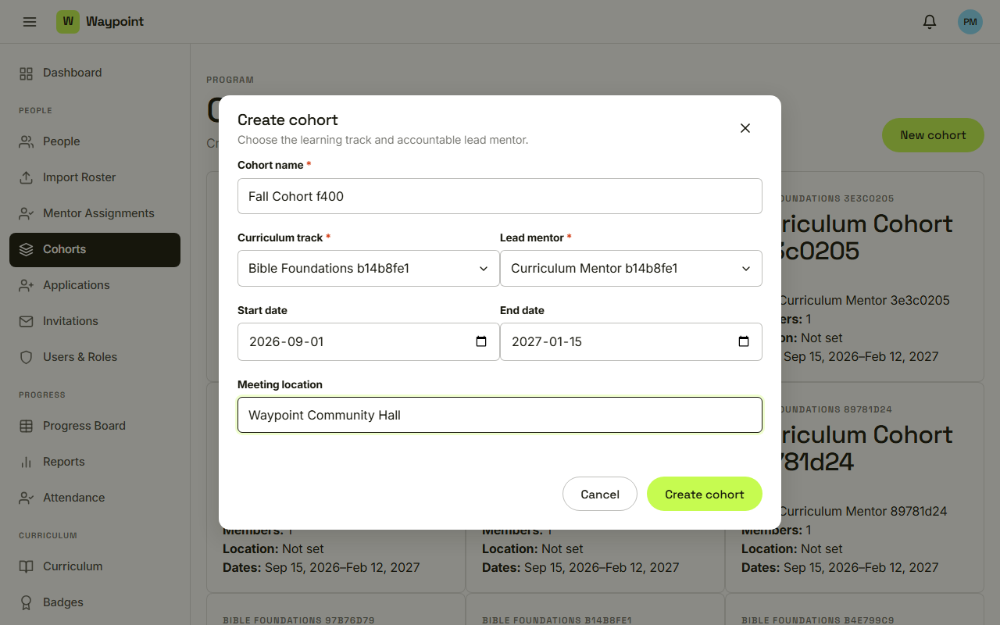
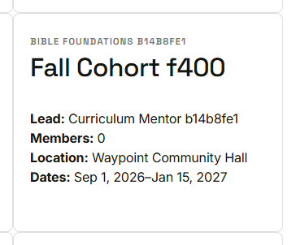
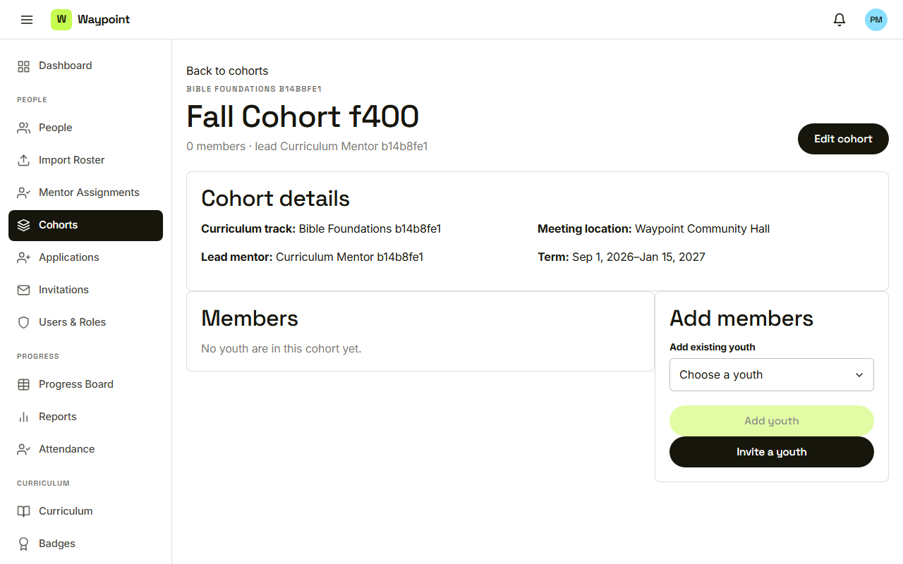
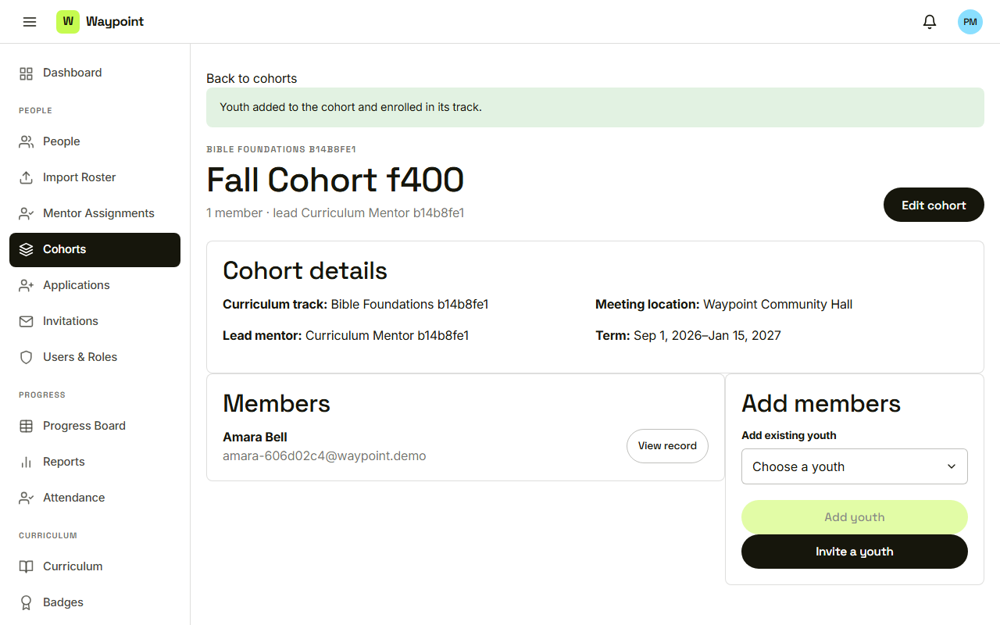
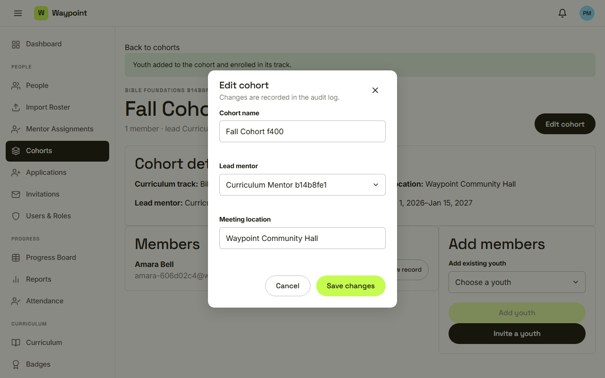

Waypoint · Video 027
Managing cohorts
Create, fill and edit a cohort
Create cohort

Name, track and lead mentor are required
The new cohort card

Track, lead, members, location, dates
Cohort detail

No members yet, and an Add members panel
Youth added

One member, and the count follows
Edit cohort

Changes are recorded in the audit log
Things to remember
A name, a track and a lead mentor are required
Add youth from the cohort page
Edits are recorded in the audit log
Errors offer Retry, empty lists offer a first action